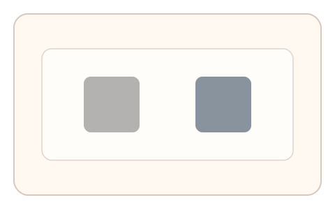
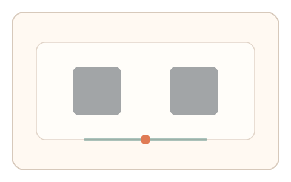
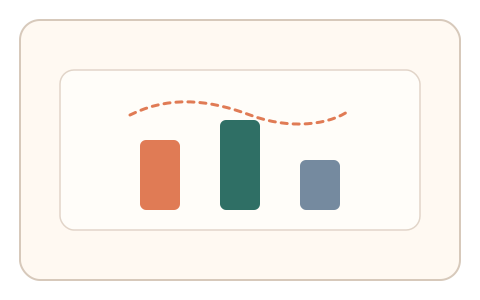

#123
D：单底座 × 单信号 × 自适应/短序列（视觉时域）
已扩展
掩蔽解除对齐
调节两目标的掩蔽强度到刚可见且相等，记录阈值差与微调轨迹进行判定。
概念原文
两个被不同强度掩蔽的目标，用户调节曝光/透明度到“刚能看见且两者相等”，系统记录阈值差与微调路径并做任务内比较。
利用“相对可见性校准”替代单点阈值判定。
研究背景
视觉掩蔽会改变可见性阈值，个体对相对可见性校准更稳定。通过比较两目标的解除阈值与微调路径，可形成难以伪造的时域特征。
核心机制
- 两个目标被不同强度的掩蔽覆盖。
- 用户调节曝光/透明度到“刚能看见且两者相等”。
- 记录两目标阈值差与微调轨迹。
- 在任务内做相对比较并与基线对照。
用户流程
- 步骤 1：用户看到两个被掩蔽的目标。
- 步骤 2：拖动滑杆调整掩蔽强度直到两者刚好等可见。
- 步骤 3：系统记录阈值差与微调次数并判定。
判定信号
相对可见性阈值差
相对阈值比绝对亮度更稳定。
微调轨迹与回拉
真实用户会出现细微往返调整。
判定逻辑
阈值差需落在人类分布区间且存在自然微调；过度稳定或无回拉判异常。
对抗面
- 脚本直接读取渲染层并设定固定阈值
- 重放真实用户的调节轨迹
防御与缓解
- 随机化掩蔽纹理与目标形状
- 加入短时呈现与噪声干扰
- 多轮相对比较降低单次伪造
可达性与风险
提供高对比替代任务与可调亮度范围，避免低视力用户失败。
- 屏幕亮度/对比度差异影响阈值
- 掩蔽过强导致用户挫败
可视化状态

状态 1：双目标掩蔽
两个目标被不同强度的掩蔽覆盖。

状态 2：阈值对齐
拖动滑杆让两者刚可见且相等。

状态 3：阈值差判定
比较阈值差与微调轨迹。
参考资料
Visual masking
说明掩蔽对可见性阈值的影响。
Just-noticeable difference
说明阈值与可觉差异。